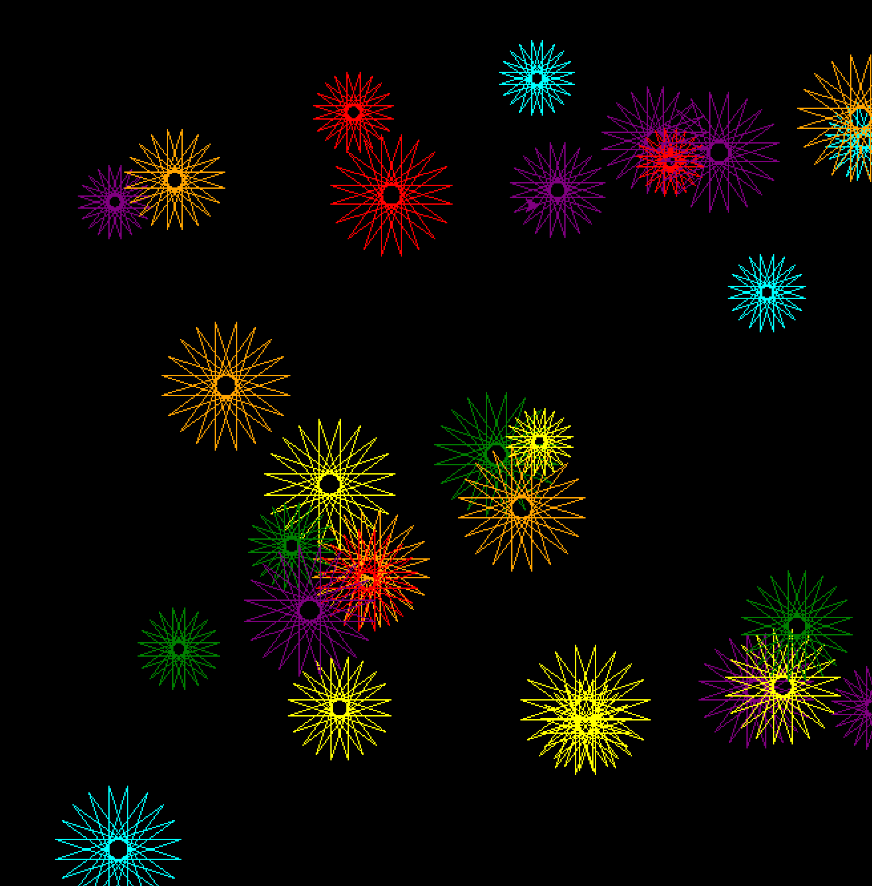

Visuales con Python
Exploraciones visuales generadas con código y datos.
Este visual fue generado mediante código en Python.
La animación existe como proceso computacional y debe ejecutarse localmente.
🔗 Ver código y ejecutar instrucciones en GitHub
